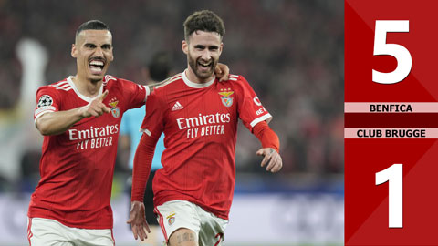
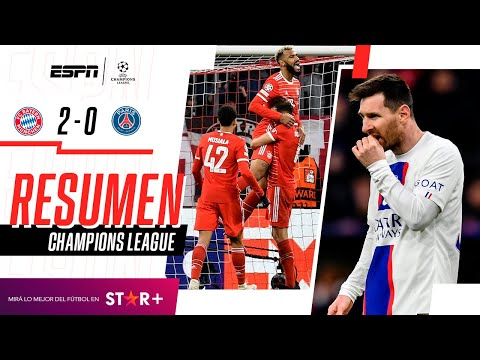

|  |
El Benfica tuvo una importante ventaja psicológica de cara al segundo partido tras ganar el partido de ida 2-0 en Bélgica. En el segundo minuto, Joao Mario completó la jugada para meter el balón en la portería del Club Brugge tras una agresión por la derecha. Sin embargo, el gol fue anulado cuando se usó el VAR para encontrar que Goncalo Ramos, el jugador involucrado en el reciente incidente, estaba fuera de juego. El Benfica mejoró su rendimiento después de que le negaran un gol. Siguieron haciendo olas en dirección a la meta del Club Brugge, en particular el explosivo Goncalo Ramos, quien se destacó por Portugal en la Copa del Mundo de 2022. Pasado el tiempo de descuento, el Benfica no marcó su primer gol hasta el minuto 38. Ramos pasó el balón desde la izquierda a Rafa Silva, quien esquivó hábilmente al defensa del Club Brugge antes de disparar fuera del área del Club Brugge. 1-0 para el Benfica, y el marcador acumulado tras dos partidos es actualmente de 3-0 a favor del club portugués. El Club Brugge intentó extender el asalto en los minutos siguientes, pero sus puntas de lanza estaban divididas, por lo que no pudieron producir muchos pases peligrosos. Ramos resistió el desafío del defensor rival para anotar un punto arriesgado en el segundo minuto del tiempo de descuento de la primera mitad, lo que le dio al Benfica una ventaja de 2-0 y llevó el marcador de ida a 4-0 en general. |
|  |
El Paris Saint-Germain de Lionel Messi quedó eliminado este miércoles en octavos de final de la Champions League tras perder 2 a 0 con Bayern Munich en Alemania y cerrar un global negativo de 3-0. El equipo parisino volvió a fallar en el máximo certamen europeo y se despidió en la misma instancia que el año pasado. Ni con la titularidad de Messi y Kylian Mbappé le alcanzó al PSG para revertir la serie ante el conjunto alemán. Los goles de Bayern Munich, que avanzó a cuartos, fueron anotados por Eric Maxim Choupo-Moting, a los 15 minutos del segundo tiempo, y Serge Gnabry, a los 45. Se trata de un golpe muy duro para todo el equipo. Una derrota que puede marcar el futuro de Messi, que todavía no definió si se quedará en el PSG o si se irá a otro club. En ese camino, Barcelona e Inter Miami se presentan como las opciones más firmes. |